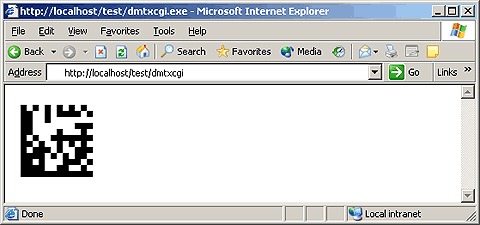
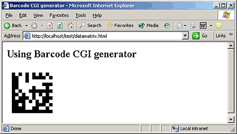
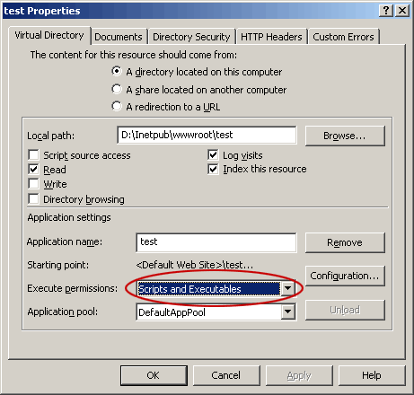
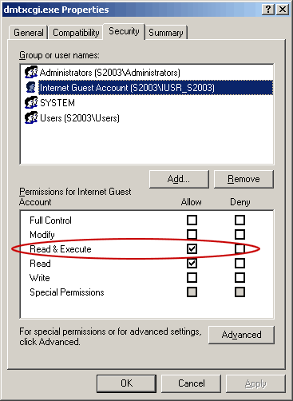
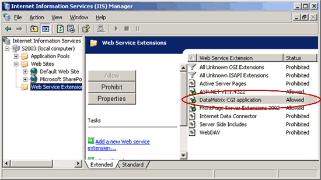
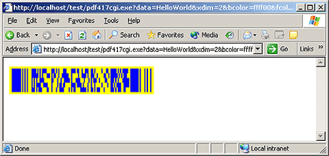
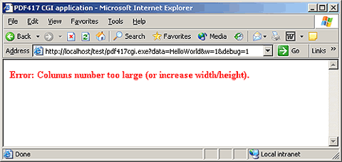

| For more information please visit our main site www.BarcodeTools.com. |
|||||||||||||||||||||||||||||||||||||||||||||||||||||||||||||||||||||||||||||
| CGI | |||||||||||||||||||||||||||||||||||||||||||||||||||||||||||||||||||||||||||||
|
|||||||||||||||||||||||||||||||||||||||||||||||||||||||||||||||||||||||||||||
| Using the CGI application | |||||||||||||||||||||||||||||||||||||||||||||||||||||||||||||||||||||||||||||
|
Install the CGI application, see below.
You can use this application right after that. Enter the address of your barcode CGI application into the browser address bar and you should see the barcode image. You can see a sample DataMatrix barcode below.  You can specify parameters to customize the barcode. For example, use the data parameter to encode the string "HelloWorld" in DataMatrix. http://localhost/test/dmtxcgi?data=HelloWorld See the corresponding description for more detailed information about the parameters of the CGI application (click CGI in the menu to the left and then, for example, click DataMatrix). You can use the barcode CGI generator in an IMG tag of your HTML page. For example: <html>You will see a page like the one shown below.  |
|||||||||||||||||||||||||||||||||||||||||||||||||||||||||||||||||||||||||||||
| Installing the CGI application on a Linux (Apache) server | |||||||||||||||||||||||||||||||||||||||||||||||||||||||||||||||||||||||||||||
|
Download the necessary CGI application from our site:
Upload the CGI application (dmtxcgi file) in the binary mode to your server (for example, to the cgi-bin directory). Set the execution permission (CHMOD) to 755, for example. You can use the barcode CGI generator right after that. |
|||||||||||||||||||||||||||||||||||||||||||||||||||||||||||||||||||||||||||||
| Installing the CGI application on a Windows (IIS) server | |||||||||||||||||||||||||||||||||||||||||||||||||||||||||||||||||||||||||||||
|
We will go through the installation of the barcode CGI generator onto the server IIS 6.0.
Some variations are possible if you install it on other servers. Download the necessary CGI application from our site:
Create a Virtual Directory and copy the file of the CGI application (dmtxcgi.exe file) to it. Set "Execute permissions" in the properties of the Virtual Directory as shown in the picture below. It is better to use a separate folder for CGI applications.  Set the security properties of the file as shown in the picture. The account the file of the CGI script will run under must have the Execute permission. See the picture below. If you do not do it, you will get the following error: HTTP Error 401.3 - Unauthorized: Access is denied due to an ACL set on the requested resource.  And the last. You must add CGI applications to the list of allowed "Web Service Extensions". If you do not do it, you will get error 404: HTTP Error 404 - File or directory not found. To do it, start Internet Information Service (IIS) Manager, click "Web Service Extensions" and add the CGI application as shown in the picture.  Also, you can allow "All Unknown CGI Extensions", but we do not recommend that you do it for security reasons. You can also find information about installing CGI onto the Microsoft IIS server on the Microsoft site. |
|||||||||||||||||||||||||||||||||||||||||||||||||||||||||||||||||||||||||||||
| PDF417 CGI parameters | |||||||||||||||||||||||||||||||||||||||||||||||||||||||||||||||||||||||||||||
Our barcode CGI generators understand both GET and POST requests.
|
|||||||||||||||||||||||||||||||||||||||||||||||||||||||||||||||||||||||||||||
| Examples | |||||||||||||||||||||||||||||||||||||||||||||||||||||||||||||||||||||||||||||
|
If you specify the following parameters:
http://localhost/test/pdf417cgi.exe?data=HelloWorld&xdim=2&bcolor=ffff00&fcolor=0000ff "HelloWorld" will be encoded in the PDF417 barcode, the x-dimension is 2 pixels, the background color is yellow, the foreground color is blue. See the picture below.  To get information about the PDF417 CGI application (and also the license information), just specify the parameter help: http://localhost/test/pdf417cgi.exe?help=1 If the web server returns an error for some reason (for example, a CGI Error for a Windows server or an Internal Server Error for Linux), you may have specified some parameters incorrectly. Try specifying the parameters as shown below and you will get such an error. http://localhost/test/pdf417cgi.exe?data=HelloWorld&w=1 As you can see, the width of the PDF417 image is set to 1 pixel. Of course, a PDF417 barcode image cannot have this size. To get debugging information, add the parameter debug and you will see an error message: http://localhost/test/pdf417cgi.exe?data=HelloWorld&w=1&debug=1  |
|||||||||||||||||||||||||||||||||||||||||||||||||||||||||||||||||||||||||||||